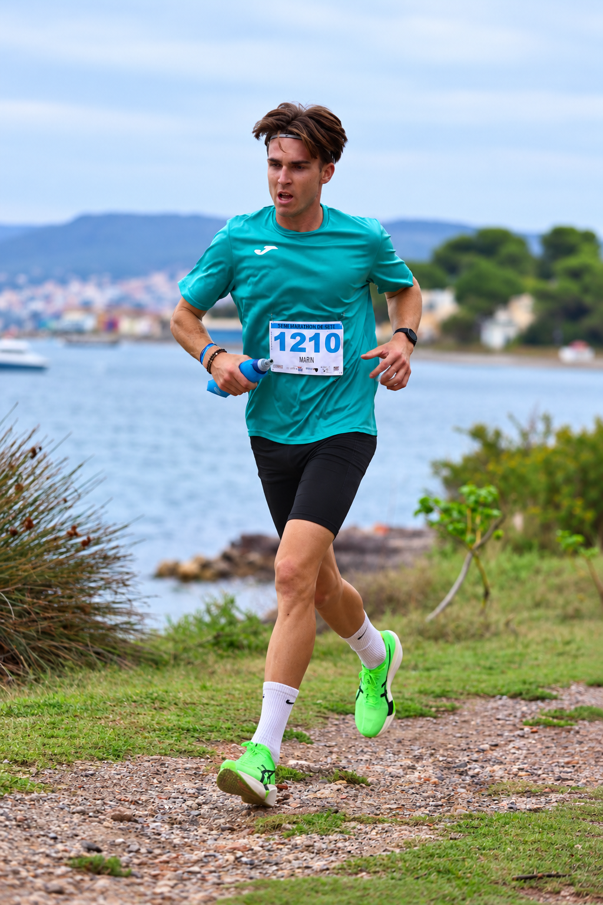
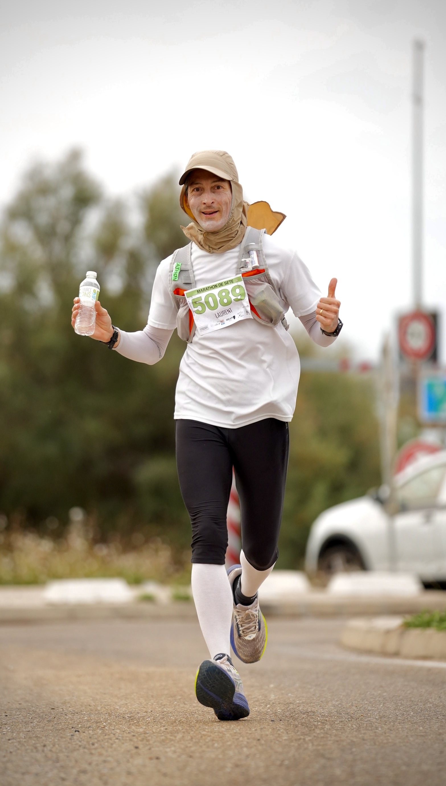

Sète welcomed runners on 4 October for the sixth edition of its community road-racing event, with the Mediterranean waterfront, canals, port and city streets forming the backdrop to a full morning of competition.
The programme combined 5 km and 10 km races with a 21.1 km half-marathon and a marathon. The half-marathon started at 9:00 from the Esplanade des Copains d'Abord, where the race village also welcomed competitors back at the finish.

A race built around inclusion
Organiser Les Dys Mille Pas uses the event to promote the inclusion of people with disabilities and to support children who are ill or living with disabilities. The routes were designed to welcome adapted running chairs and handisport participation alongside the wider field.
Music and local animation accompanied the course, while the finish village brought participants together for awards, food and a closing celebration shaped by the association's volunteer team.

Image Media coverage
Eduardo Castro, Johnny, Raul de Godoy, Casian Nicorescu and Leandro Rocha covered the Semi-Marathon de Sète for Image Media, documenting the athletes, the coastal setting and the welcome at the harbour.
The event was organised by the Sète charity Les Dys Mille Pas, supported by volunteers and partners committed to sport, inclusion and the city.
View the Semi-Marathon de Sète photo gallery →
Image Media coverage
Reporting: IM News Editorial Desk
Coverage photographers: Eduardo Castro, Johnny, Raul de Godoy, Casian Nicorescu and Leandro Rocha / Image Media
Event date, formats, venue and organiser checked against official Semi-Marathon de Sète sources.